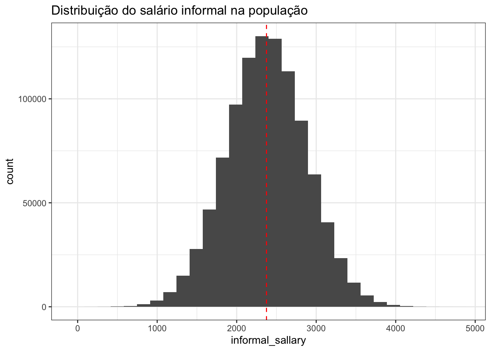

# definindo o tamanho da população
pop_size <- 1000000
set.seed(123)
population <- tibble(
# id do indivíduo
id = 1:pop_size,
# gerando os valores de salário informal, para uma população com média de 2375 e desvio-padrão de 1000
informal_sallary = rnorm(n = pop_size, mean = 2375, sd = 1000)
)Motivação
Me lembro como se fosse hoje de uma das primeiras crises que tive quando comecei a estudar estatística pra valer: foi em uma aula de Inferência sobre parâmetros, estimadores e estimativas, que corria muito bem até o momento em que a professora disse “então, a média amostral é o melhor estimador da média populacional.”
Bom, eu não consigo imaginar como uma afirmação dessas reverbera em um aluno com a formação em alguma área de exatas… Mas, pra mim, que tive uma formação em biológicas/saúde, essa frase gerou uma sequência de pensamentos [e emoções]:
√â √≥bvio que a m√©dia amostral √© a melhor forma de estimar a m√©dia populacional‚Ķ [aff üôÑ]
Mas calma‚Ķ se para calcular a m√©dia populacional, somamos todos os elementos e dividimos pelo N populacional, o jeito de calcular a m√©dia amostral n√£o √© somando todos os elementos da amostra e dividindo pelo n amostral? [a vida n√£o √© direta assim? üëÄ]
Tem algum outro jeito de estimar a m√©dia populacional que n√£o seja usando a m√©dia amostral? [n√£o, n√©?! üò¨]
Para estimar parâmetros como a m√©dia, variância ou desvio-padr√£o de uma popula√ß√£o, n√£o bastaria simplesmente aplicar as mesmas f√≥rmulas usadas para a popula√ß√£o, mas utilizando os dados da amostra? [üò±üò±üò±]
Todos os questionamentos que passaram pela minha mente foram angustiantes… Por um bom tempo eu nem conseguia organizar essas dúvidas de forma que pudesse formular as perguntas certas… Infelizmente, muitos professores de exatas têm pouca sensibilidade para explicar conceitos que, para eles, são óbvios. E, quando migramos de área, entender esses conceitos iniciais é essencial para construir uma base sólida para todos os outros mil conceitos que virão pela frente.
Depois de buscar diferentes professores, videoaulas e livros para entender essa afirmação (supostamente tão simples) feita pela minha professora de Inferência, percebi algo valioso: um dos melhores caminhos para consolidar um bom raciocínio em estatística é simular dados de uma população (ou seja, desenhar uma população com parâmetros conhecidos) e observar como as amostras extraídas dessa população se comportam. Quando conseguimos visualizar, de forma concreta, aquilo que antes era apenas um conceito abstrato, tudo começa a fazer mais sentido. E é exatamente essa a proposta deste post: explicar de maneira visual e prática, alguns conceitos que tanto me angustiaram lá atrás. Vamos ver, a partir de uma população fictícia, como os conceitos de parâmetros, estimadores e estimativas se conectam.
Introdução
Um passo para trás: objetivo da inferência… Por que precisamos de amostras para inferir sobre parâmetros populacionas? Por que queremos saber os parâmetros populacionais?
Exemplo fictício: estimar o salário informal dos habitantes de um país. Pra que isso serve? Como poderíamos fazer: indo atrás de toda a população ou estimando a partir de uma amostra…
Não vou entrar em detalhes sobre como amostrar essa popualaçao, entao vamos dar um salto de fé aqui e imaginar que conseguimos chegar em uma amostra altamente confiável dessa população de interesse. Para cada pessoa dessa amostra, computamos a renda média feita mensalmente através de trabalhos informais… e, com isso, chegamos em conclusão sobre a amostra… mas e aí, como conseguimos chegar em conclusões sobre a população?
Vamos simular?
| id | informal_sallary |
|---|---|
| 1 | 1814.524 |
| 2 | 2144.823 |
| 3 | 3933.708 |
| 4 | 2445.508 |
| 5 | 2504.288 |

Temos certeza da média populacional porque determinados ela: mean = 2375, sd = 1000. Imagina que retiramos uma amostr dessa população de 100 pessoas
# A tibble: 100 × 2
id informal_sallary
<int> <dbl>
1 969167 1588.
2 188942 4289.
3 134058 2798.
4 124022 2746.
5 685285 1212.
6 226318 2429.
7 365209 2518.
8 648795 1475.
9 985797 3073.
10 193627 1308.
# ℹ 90 more rows[1] 2399.828Média populacional real: 50.00977
Média das médias amostrais (não viesado): 49.99139
Média das médias enviesadas: 50.70219